นัดหมายปรึกษา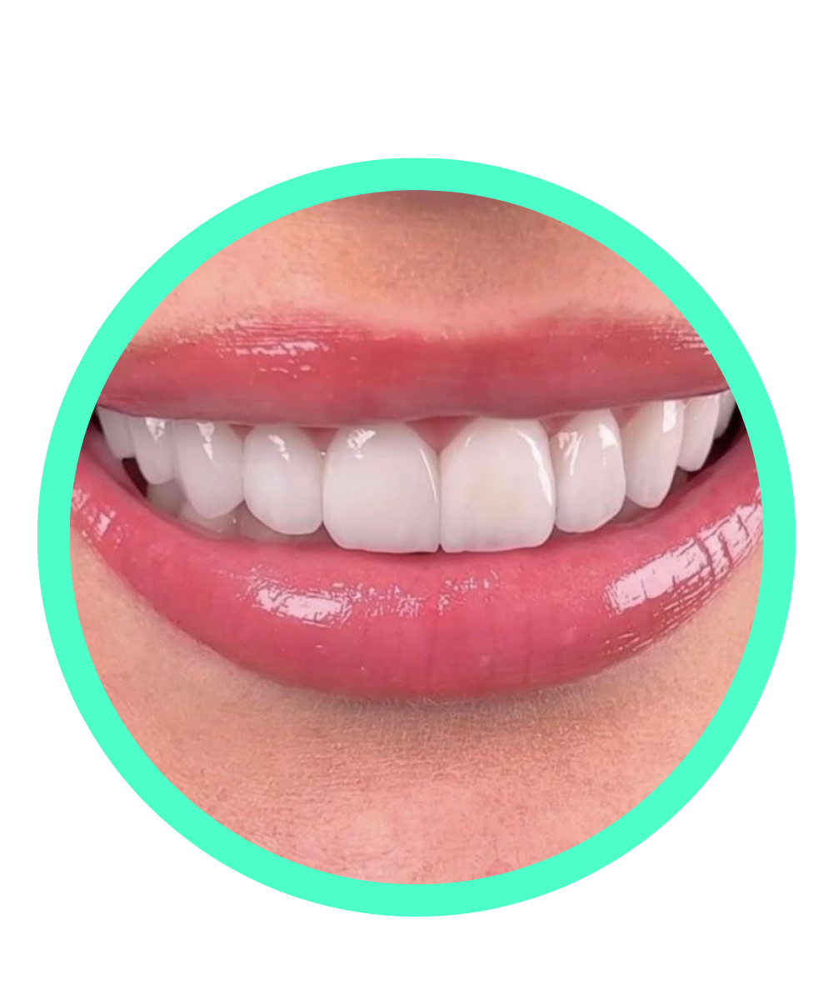

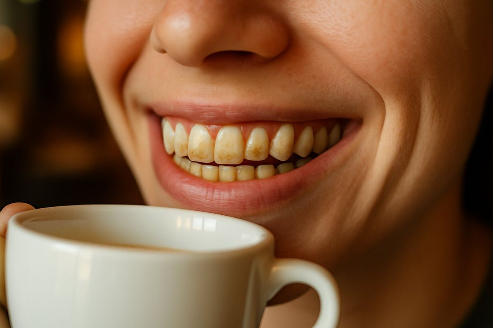
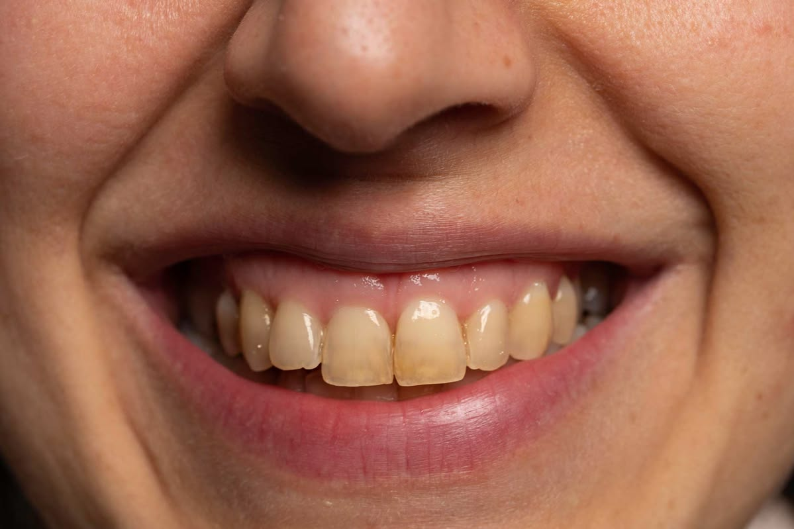
อาการเสียวฟันจี๊ดๆ เป็นผลข้างเคียงที่พบได้ปกติและจะค่อยๆ หายไปเองภายใน 1-2 วันงดรับประทานอาหารและเครื่องดื่มที่เย็นจัดหรือร้อนจัดในช่วงแรกเปลี่ยนมาใช้ยาสีฟันสูตรลดอาการเสียวฟันชั่วคราว ควบคู่กับแปรงสีฟันขนนุ่ม หากเสียวฟันมากสามารถทานยาแก้ปวดเพื่อบรรเทาได้ตามที่ทันตแพทย์แนะนำ
อาการเสียวฟันจี๊ดๆ เป็นผลข้างเคียงที่พบได้ปกติและจะค่อยๆ หายไปเองภายใน 1-2 วันงดรับประทานอาหารและเครื่องดื่มที่เย็นจัดหรือร้อนจัดในช่วงแรก เปลี่ยนมาใช้ยาสีฟันสูตรลดอาการเสียวฟันชั่วคราว ควบคู่กับแปรงสีฟันขนนุ่ม หากเสียวฟันมากสามารถทานยาแก้ปวดเพื่อบรรเทาได้ตามที่ทันตแพทย์แนะนำ
แปรงฟันให้สะอาดและใช้ไหมขัดฟันทุกวัน เพื่อไม่ให้คราบจุลินทรีย์และคราบสีใหม่เข้าไปสะสมหากต้องการดื่มชาหรือกาแฟในชีวิตประจำวัน แนะนำให้ใช้หลอดดูดเพื่อลดโอกาสที่น้ำสีเข้มจะสัมผัสกับผิวฟันหน้าโดยตรง และเข้าพบทันตแพทย์เพื่อขูดหินปูน ขัดคราบสี และตรวจสุขภาพช่องปากทุกๆ 6 เดือน
ทันตแพทย์จะตรวจสภาพช่องปากเพื่อดูว่ามีฟันผุหรือเหงือกอักเสบที่ต้องรักษาก่อนหรือไม่ จากนั้นจะใช้แถบเฉดสี (Shade Guide) เทียบสีฟันปัจจุบันของคนไข้ เพื่อประเมินระดับความขาวที่สามารถทำได้และใช้เปรียบเทียบผลลัพธ์หลังทำเสร็จ
ใส่เครื่องมือช่วยอ้าปากเพื่อป้องกันริมฝีปากและแก้มสัมผัสกับน้ำยา จากนั้นจะทำความสะอาดผิวฟันและทาเจลหรือใส่วัสดุป้องกันเหงือก (Gingival Barrier) ตามแนวขอบเหงือกและฉายแสงให้แข็งตัว เพื่อป้องกันไม่ให้น้ำยาฟอกสีฟันไหลไปสัมผัสเนื้อเยื่ออ่อนซึ่งอาจทำให้เกิดการระคายเคือง
ทันตแพทย์จะป้ายน้ำยาฟอกสีฟันลงบนผิวฟันด้านหน้า และใช้เครื่องฉายแสง ฉายกระตุ้นให้น้ำยาแตกตัวและซึมเข้าไปขจัดคราบสีที่ฝังลึกในชั้นเนื้อฟัน ขั้นตอนนี้มักจะแบ่งทำประมาณ 2-3 รอบ รอบละ 15-20 นาที
เมื่อครบกำหนดเวลา ทันตแพทย์จะดูดน้ำยาฟอกสีฟันและลอกวัสดุป้องกันเหงือกออก ล้างทำความสะอาดช่องปาก และทำการเทียบสีฟันอีกครั้งเพื่อให้คนไข้เห็นระดับความขาวที่เปลี่ยนไปอย่างชัดเจน
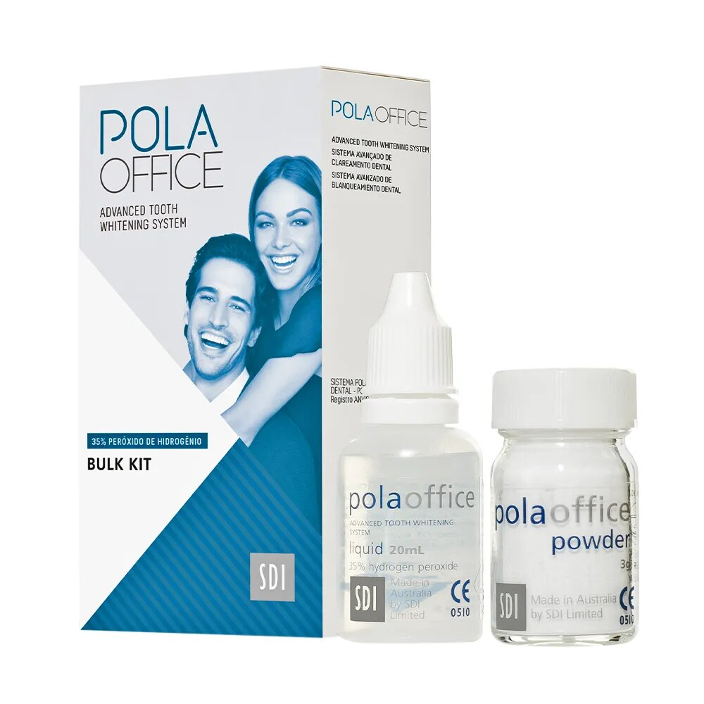
จุดเด่น
ขาว2-4เฉด
ขาวนาน4-6เดือน
ขาวขึ้นและราคาถูกกว่า
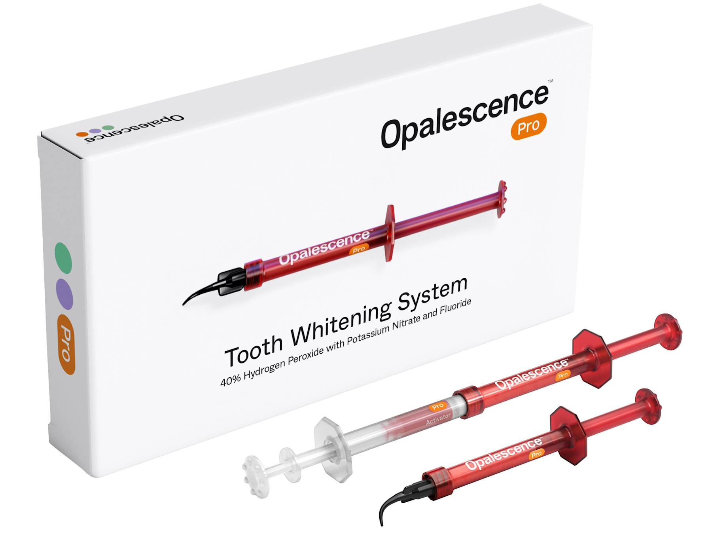
จุดเด่น
ขาว3-6เฉด
ขาวนาน6-12เดือน
ขาวขึ้นขาวนาน
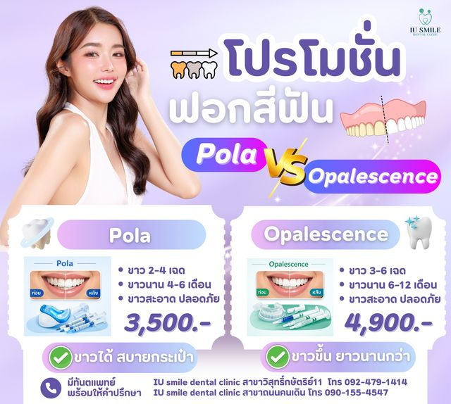
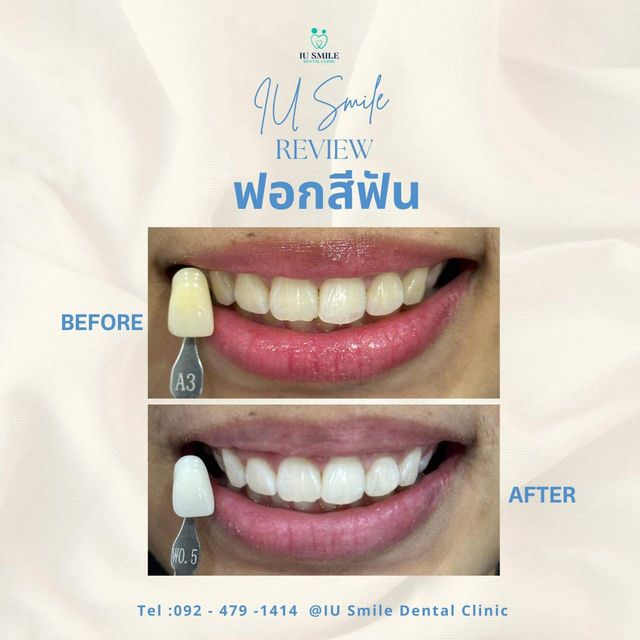
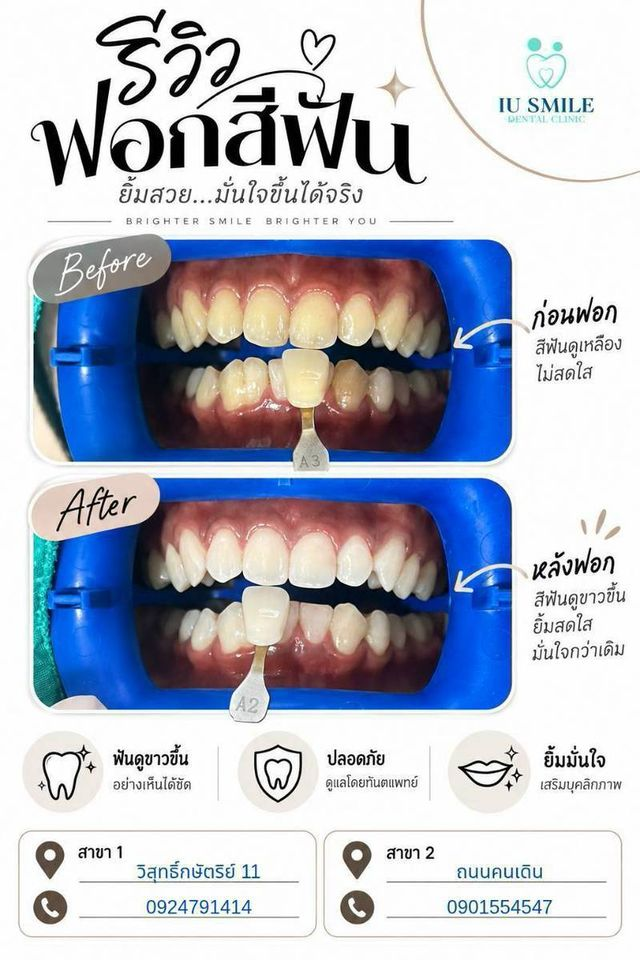
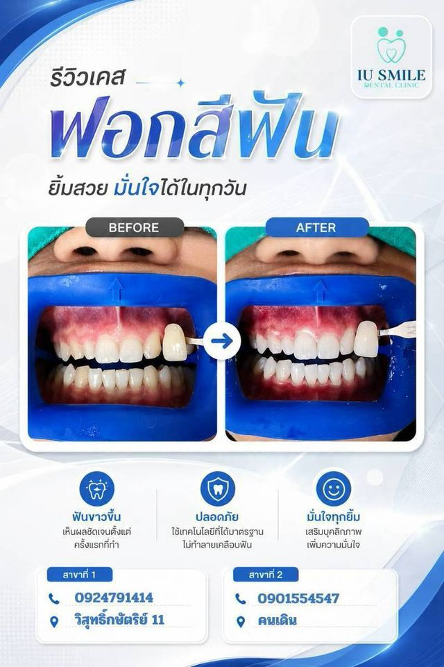
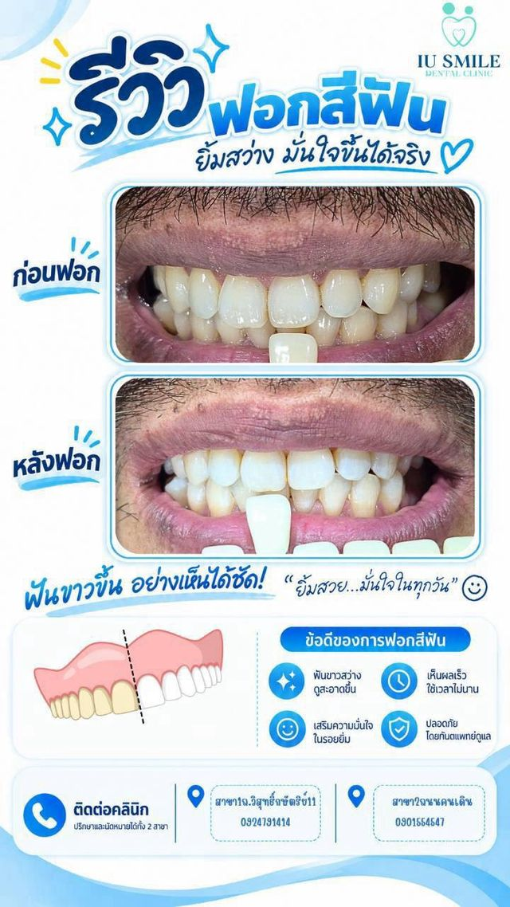
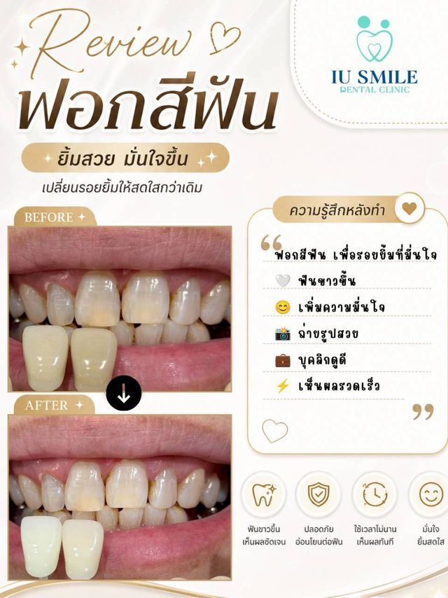
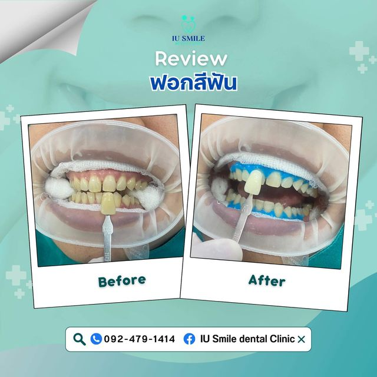